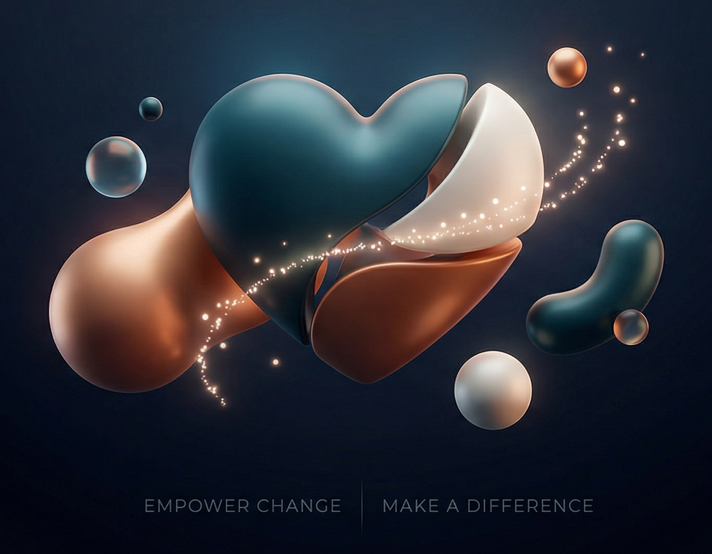

Support connection, conversation, and community wellbeing.
Find out what being an ambassador could involve, explore different ways to help, and take your next step when you feel ready.

Start here
Ambassador overview
Explore what the ambassador role could involve, what to expect, and important things to understand.
Different ways to help
Possible roles
Explore the different ways ambassadors may support Tidy Butt and its community.
Need support?
Support and contact
Access support information, contact details, and helpful signposting.
You can also access downloads and express your interest using the links below.